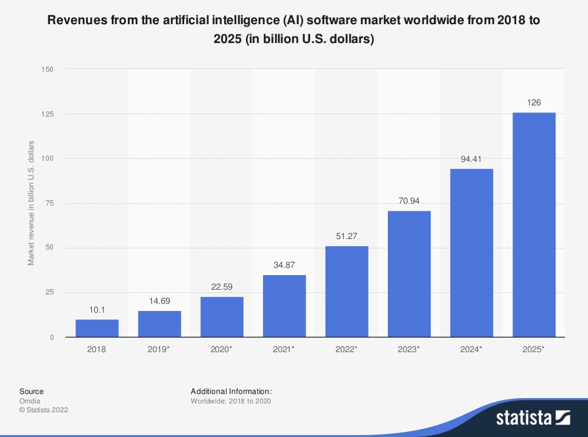

The Looming Autonomous Future#
Within the next 12 to 24 months, AI agents are expected to revolutionize how businesses operate, enabling companies to make strategic moves at a pace and magnitude previously unimaginable. [PwC]
Agentic AI: Business Transformation and The Engine of Autonomous Financial Empowerment#
AI is rapidly reshaping the landscape of business operations across all functions, from software development and data-driven decision-making to marketing [Statista - Revenues from the Artificial Intelligence Software Market (2018-2025)]. The latest innovations in machine learning are continuously pushing the boundaries of capability and quality, leading to deep integration within both customer-facing and internal business operations. But the current wave of advancements – particularly in Agentic AI – represents a paradigm shift. This advanced technology surpasses traditional machine learning and robotic process automation (RPA) by integrating multiple large language models that communicate with each other to derive accurate, nuanced responses [¹]. Agentic AI is poised to revolutionize the financial services industry by enabling autonomous decision-making, hyper-personalization, and seamless customer experiences.

The two primary applications of AI today – efficiency enhancement and capability expansion – are crucial stepping stones, but Agentic AI unlocks a new dimension: proactive problem solving. This transformation is already evident in the financial sector, a traditionally slow adopter of technological innovations. Forward-thinking fintech firms like Klarna, have recently demonstrated the power of strategic AI investment to improve operational efficiency and customer experience, achieving a 31% year-over-year revenue surge to $2.2 billion with a 24% increase in operating income. [CX Network] Their AI-powered risk management system exemplifies how this technology can reduce financial losses and enhance overall profitability.
Key Benefits of Agentic AI in Financial Services:
Enhanced Customer Experience: Personalized interactions, tailored financial advice, and real-time support will transform the way customers interact with financial institutions [¹]. Imagine an AI agent proactively identifying opportunities to optimize a customer’s budget based on their spending patterns, or automatically negotiating lower rates on recurring bills.
Improved Operational Efficiency: Automated processes, such as underwriting and claims processing, will reduce manual workloads and minimize errors [¹]. This allows for faster loan approvals, quicker claim settlements, and reduced administrative costs – benefits that can be passed onto customers.
Increased Innovation: Agentic AI will unlock new revenue streams through AI-driven insights, predictive analytics, and innovative product offerings [¹]. This could include personalized investment portfolios tailored to individual risk tolerance and financial goals, or dynamic pricing models for insurance products based on real-time data.
Enhanced Risk Management: Real-time fraud detection, compliance monitoring, and risk mitigation will safeguard customer assets and sensitive information [¹]. Agentic AI can analyze vast datasets to identify suspicious activity and prevent fraudulent transactions before they occur.
Addressing Critical Financial Challenges with Autonomous Intelligence#
As AI continues to evolve, it presents an unprecedented opportunity to address critical financial challenges, particularly for working-class Americans. Disparities in wealth and retirement security are widening, and traditional banking models are demonstrably failing to meet the needs of those most affected. [Urban Institute] AI-driven financial solutions, embedded banking, and automated financial planning tools have the potential to create more accessible financial systems. By leveraging Agentic AI, we can develop personalized financial strategies, automate savings programs, optimize credit access, and ultimately modernize banking experiences while promoting genuine financial access, expansion of markets, development of strong communities and households alike. [PwC]
Looking ahead, AI’s role in finance is poised to expand even further, influencing risk assessment, fraud detection, and compliance automation. The continuous improvement of AI-driven models will redefine the competitive landscape, allowing innovative fintechs and forward-thinking traditional banks alike to harness new efficiencies and capabilities. Those who embrace AI-powered transformation early – particularly those focused on serving underserved communities – will likely emerge as leaders in the evolving financial ecosystem.
A Call for a New Banking Paradigm: The Modern CDFI Powered by Agentic AI#
A modern financial institution must emerge—one that prioritizes inclusion, innovation, and adaptability. This isn’t simply about updating existing systems; it’s about building something fundamentally new – a next-generation Community Development Financial Institution (CDFI) powered by the transformative potential of Agentic AI.
Such an institution must:
Offer Affordable Banking Solutions: Fee-free accounts, no-minimum-balance requirements, and affordable credit options tailored to low-income and gig workers. Agentic AI can personalize these offerings based on individual financial circumstances, ensuring accessibility for all.
Expand Digital and Financial Access: Fintech-driven solutions for underserved areas, including rural communities and unbanked populations. Autonomous agents can provide remote financial guidance and support, bridging the gap in access to traditional banking services.
Enhance Retirement and Wealth-Building Tools: Automated savings programs, employer-sponsored plans for gig workers, and investment platforms accessible to all income levels. Agentic AI can personalize these tools based on individual risk tolerance and long-term financial goals.
Leverage AI and Digital Transformation: AI-driven financial planning, seamless integration with digital wallets, and enhanced mobile banking experiences to meet the expectations of younger generations. Autonomous agents can provide proactive financial education and support through intuitive digital interfaces.
Address Systemic Inequality: Partner with community development financial institutions (CDFIs) and impact-driven organizations to bridge the racial wealth gap. Agentic AI can identify and address biases in lending practices, aligned with the Community Reinvestment Act of 1977, ensuring equitable access to capital for all communities.
The data paints a stark picture: America’s financial system is failing to serve its most vulnerable populations. Essential workers, rural communities, and minority groups face systemic barriers to financial security, while the country’s retirement and investment infrastructure remains outdated and inaccessible to many. In addition, the next generations will demand a financial system that aligns with their needs and values.
The opportunity to redefine banking for the future is here—and the time to act is now. A new era of community development financial institutions (CDFIs) will emerge, leveraging algorithms and agentic technology to address systemic inequalities and promote financial inclusion on a larger scale. [Federal Reserve Bank of New York] These modern CDFIs are equipped with advanced analytics tools and AI-driven risk assessment models, enabling them to offer more tailored financial products and services to underserved communities. [Urban Institute]
Agentic AI: Revolutionizing Financial Services – But With Caution#
While Agentic AI offers immense potential, it’s crucial to acknowledge the challenges and risks [¹]: Labour market disruption may necessitate reskilling initiatives; human oversight is essential for accountability and sound judgment; privacy and cybersecurity must be paramount; and updated regulatory frameworks are needed to ensure ethical standards. Market volatility could also increase with widespread adoption of autonomous trading systems.
However, the potential benefits – particularly in advancing financial inclusion in underserved communities – are too significant to ignore. Agentic AI can empower individuals with personalized financial guidance, access to credit, and opportunities for wealth building. But this requires addressing challenges such as market concentration and establishing clear governance frameworks to ensure equitable access to these technologies.
The opportunity to redefine banking for the future is here—and the time to act is now. We are committed to building a financial system that serves all Americans, powered by the transformative potential of Agentic AI and guided by a deep commitment to social impact. This isn’t just about innovation; it’s about creating a more equitable and prosperous future for all.